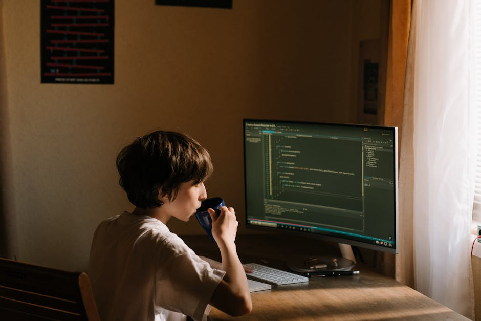

Master Python Development with Visual Studio Code: A Step-by-Step Tutorial
Get started with Python development using VS Code, setting up your environment, running scripts, and debugging like a pro.
By Upingi Team / Updated on October 02, 2024
Get started with Python development using VS Code, setting up your environment, running scripts, and debugging like a pro.
By Upingi Team / Updated on October 02, 2024
The power of VS Code comes from its extensions. Open VS Code, navigate to the Extensions view (click the square icon on the left sidebar or press `Ctrl+Shift+X`), search for "Python", and install the official extension provided by Microsoft.
This extension provides IntelliSense (code completion), linting, debugging, code navigation, and more.
VS Code needs to know which Python installation to use. Open the Command Palette (`Ctrl+Shift+P` or `Cmd+Shift+P` on Mac), type "Python: Select Interpreter", and choose the Python 3 installation you want to use for your project.
VS Code will usually detect your installed Python versions automatically.
Create a new file named `hello.py`. Add a simple line of Python code: `print("Hello from VS Code!")`. Save the file.
You can run the file by right-clicking in the editor and selecting "Run Python File in Terminal", or by clicking the green play button in the top-right corner.
VS Code has excellent debugging support. Click in the gutter to the left of a line number in `hello.py` to set a breakpoint (a red dot). Then, go to the "Run and Debug" view (click the bug icon on the left sidebar or press `Ctrl+Shift+D`).
Click the "Run and Debug" button (usually a green play icon with a bug), select "Python File". Execution will pause at your breakpoint, allowing you to inspect variables and step through the code.
Congratulations! You've successfully set up VS Code for Python development, run a script, and used the debugger. This is just the beginning.
Explore further: Learn about using virtual environments, configuring linters (like Pylint or Flake8), using Jupyter Notebooks within VS Code, and leveraging Git integration.